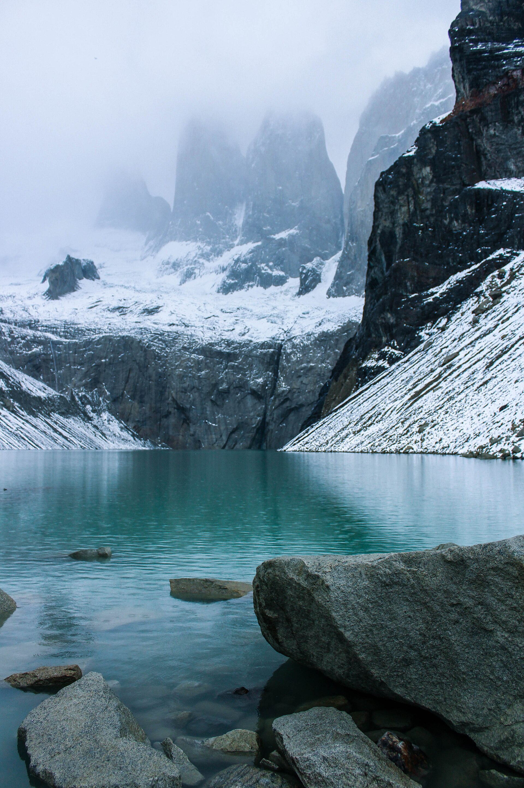

5jours
71km
+2 900m D+
Le W · Torres del Paine
Puerto Natales · févr. 2026 · 3 voyageurs

J1 · 12 févr.
Refugio Chileno

J2 · 13 févr.
Los Cuernos

J3 · 14 févr.
Paine Grande

ÉquipageMaya, Inès, Hugo
le carnet de Maya
5 JOURS
5 JOURS